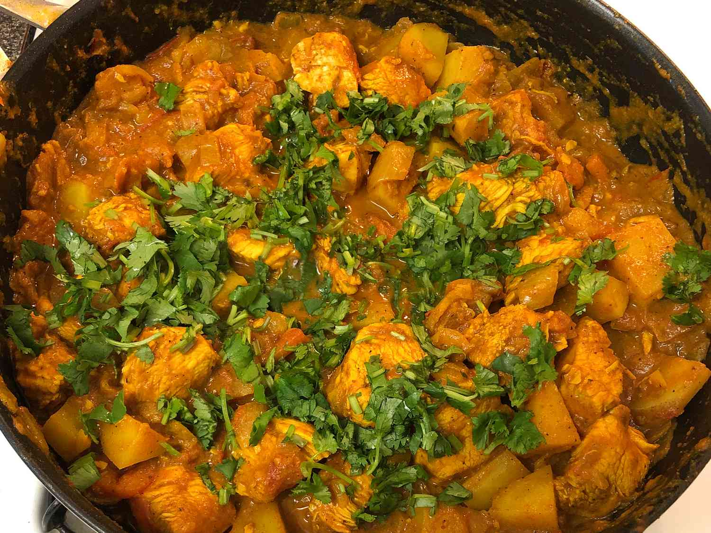

Chicken Curry with Potatoes

Description
Bengali-style chicken curry with potatoes, known as "Murgir Jhol" is a flavorful and aromatic dish from Bengal.
This curry features tender chicken pieces and potatoes cooked in a spiced gravy made with onions, tomatoes, ginger, garlic, and a blend of traditional Bengali spices like cumin, coriander, turmeric, and garam masala.
The curry is slow-cooked to allow the flavors to meld together, resulting in a rich and hearty dish best enjoyed with steamed rice or roti.
Ingredients
- 2 tablespoons olive oil
- 2 large onions, diced
- 1 tablespoon ginger-garlic paste
- 2 large tomatoes, diced
- 1 teaspoon cayenne pepper, or more to taste
- 1 teaspoon curry powder
- 1 teaspoon garam masala
- 1 teaspoon ground turmeric
- 1 teaspoon ground cumin
- 4 skinless, boneless chicken breast halves - cut into bite-size pieces
- 2 large red-skinned potatoes, chopped
- ½ cup fresh cilantro
Steps
- Heat the olive oil in a large skillet over medium-high heat.
- Cook and stir the onions in the hot oil until translucent, about 5 minutes.
- Add the ginger-garlic paste and continue cooking another 5 minutes.
- Reduce heat to medium; stir the tomatoes into the mixture and cook until the tomatoes are pulpy, 5 to 10 minutes.
- Season with the cayenne pepper, curry powder, garam masala, turmeric, and cumin; cook and stir another 5 minutes.
- Add the chicken and potatoes to the mixture in the skillet; simmer, stirring occasionally, until the potatoes are tender and the chicken is no longer pink in the center, about 20 minutes.
- Sprinkle the cilantro over the mixture and continue simmering another 10 minutes.
- Serve hot.
Reference